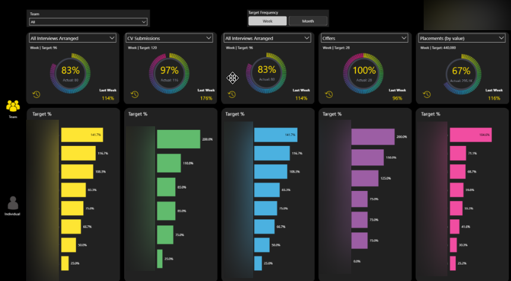
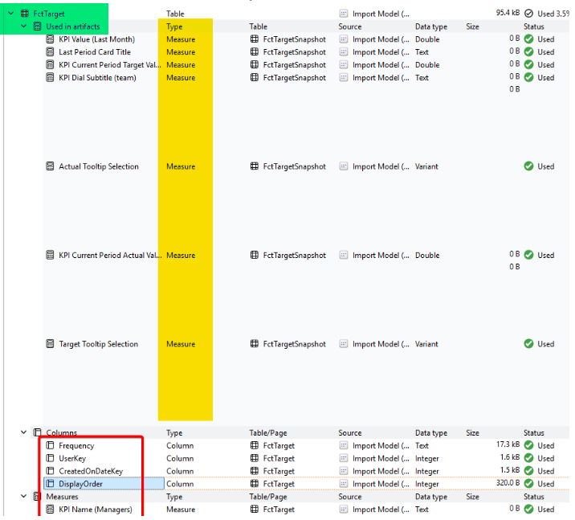
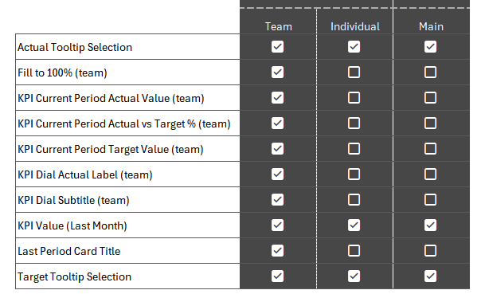
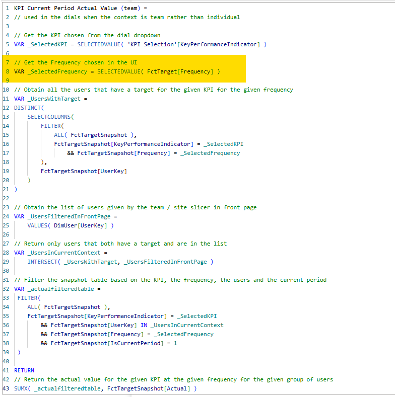
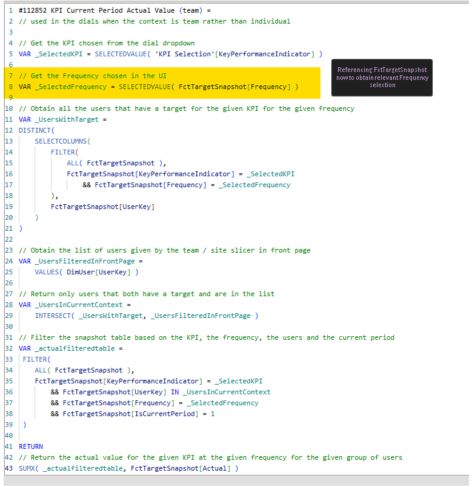
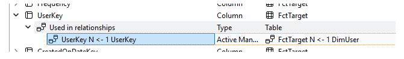
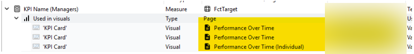
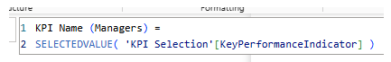

Context
We have a couple of reports which had elements associated with actual vs target KPIs. These were initially built using the relevant fact table. However requirements subsequently evolved and snapshot comparison was needed which meant a new snapshot table was created. This allowed us to reference the snapshot data and view the KPIs across different time periods.
However this additional table introduced complexity and redundancy into the semantic model. It was believed that the original fact table could be completely replaced. This investigation aimed to determine the feasibility of this.
Executive Summary
We can remove the dependency on the target fact table from the work done for the two reports.
The work required is limited and involves:
- Altering 10 DAX measures in the semantic model
- Replacing the source for the Target Frequency slicer in the Team View page of one of the reports
1. Objective
1.1 Background
Originally two of the reports in the suite were built referencing one specific fact table known as FctTarget.
After original implementation, requirements were introduced which needed snapshot comparison. A new fact table was created called FctTargetSnapshot to include snapshot data to allow us to compare and view across different time periods.
It became clear that there was significant overlap between FctTarget and FctTargetSnapshot. FctTarget was essentially superseded and so the question was raised as to whether we can safely remove it from the model or not.
1.2 The Ask
This investigation aims to identify what work would be required to remove any dependency on FctTarget and instead reference FctTargetSnapshot. In particular:
- What aspects of the current reports use FctTarget?
- What specifically do we need to do to meet the aspiration of removing it?

2. Investigation
The starting point for the investigation was Measure Killer.
We used it to identify where in the solution we made use of FctTarget. Once we understood this scope we could then investigate each of these uses and see if it was possible to remove the FctTarget reference.
2.1 FctTarget Usage
Measure Killer identified 7 artifacts across the solution that use FctTarget. In addition 4 of its columns are in use and there is one measure whose Home Table is FctTarget.

2.1.1 Used in Artifacts
From the above screenshot we can see that the target table is used in 7 different artifacts, all of which are measures.
So the possibility remains that we can re-write these measures to remove this dependency and instead reference the snapshot table only.
Measure Killer was able to indicate where in the solution these measures were used and that is shown in the below screenshot. Report 1 has two affected pages, Team and Individual. Report 2 has one affected page called Main.

There are 10 measures in total because the 7 measures identified by Measure Killer were themselves dependent on a futher 3 measures.
2.1.2 Current Mechanism
As we can see, the majority of the usage is in the Team page of Report 1. Which makes sense since this page has a target frequency button slicer which is populated using the frequency column from the FctTarget table. This slicer was not actually related to any fact tables and was being used solely as a user selection layer.
This user selection is then used in various measures in both the dials and the bar charts on the page to return the correct metric based on the selected frequency.
For instance, here is one measure:

2.1.3 Proposed Mechanism
We can change the source of the slicer to be the frequency column from the FactTargetSnapshot table.
The downstream measures can then be amended to reference this new selection in the UI:

All 10 measures can be altered like this.
2.2 FctTarget Columns
Four columns of the table were marked as in use in the solution and so we needed to understand where and how these columns were being used.
2.2.1 FctTarget[Frequency]
This was being used in the aforementioned slicer and then in the downstream measures. 2.1.3 suggests a way to remove this dependency.
2.2.2 FctTarget[UserKey]
This is used solely to create a relationship between FctTarget and DimUser (for RLS). This can be safely ignored if we remove any need for FctTarget.

2.2.3 FctTarget[CreatedOnDateKey]
This is used solely to create a relationship between FctTarget and DimDate. This can be safely ignored if we remove any need for FctTarget.
2.2.4 FctTarget[DisplayOrder]
This is used to sort the order that the various frequencies appear in the tile slicer in the user interface for the Team View page of Report 1. Again this can be safely ignored.
2.3 FctTarget Measures
There is one measure in the solution which lives as part of FctTarget. (Technically measures are table-agnostic since they operate outside the framework of a table however they must be assigned a Home Table)
The one measure with a Home Table of FctTarget is KPI Name (Managers) which is used in both the Performance over Time pages in Report 1 and Report 2.

However the measure isn't actually referencing ANY columns from FctTarget.

And we can easily assign it a different Home Table before deleting FctTarget by choosing a different table from the dropdown list
3. Summary
FctTarget is used as a slicer in Report 1 and consequently downstream in measures which drive the metrics displayed in the dial visuals and the bar chart visuals.
There is also usage for another three of its columns however two of those are to create relationships and one is for the sort order of values on the slicer.
The dependency on FctTarget can be removed by doing the following
- Replace FctTarget[Frequency] with FctTargetSnapshot[Frequency] in the slicer
- Replace the reference to FctTarget[Frequency] with FctTargetSnapshot[Frequency] in the following measures:
- Actual Tooltip Selection
- Fill to 100% (team)
- KPI Current Period Actual Value (team)
- KPI Current Period Actual vs Target % (team)
- KPI Current Period Target Value (team)
- KPI Dial Actual Label (team)
- KPI Dial Subtitle (team)
- KPI Value (Last Month)
- Last Period Card Title
- Target Tooltip Selection
- Change the Home Table for KPI Name (Managers) to a different table
4. Final Thoughts
4.1 Proof of Concept
A small proof of concept was created to validate the proposed changes, and the results were promising.
4.2 Using a Fact Table in a Slicer
Usually I would not advocate for this approach, however there are two reasons why I think it is fine to use here:
1. Dimensions usually filter Facts
Traditionally a user makes a selection in a dimension table which (because of the relationship between the two tables) propagates to the fact table. This then leads to the fact table being filtered. A measure is then aggregated over this subset of fact table records.
So we would normally seek to use a dimension table to do the filtering.
In this particular scenario we are not using the slicer to filter a fact table. Instead we are using it to capture user desired frequency only.
The measures themselves then use this selection and do the filtering over the whole fact table (ALL( FctTargetSnapshot )) themselves before then aggregating over the subset of data remaining.
2. No Frequency Dimension
We do not have a frequency dimension in the model. Longer term this may be something we could look into. And then use this and filter propagation to "properly" filter the fact table.
However this would require a spike to investigate as it would require work in the backend warehouse and a further change to the report UI and measure definitions for these measures. And potentially for those measures on the individual page (which we haven't needed to look at for this piece of work).
What Happened Next?
Other priorities subsequently took the team's attention away from this work so the proposed changes have not yet been implemented. Nevertheless the investigation established that the dependency on FctTarget can be removed with minimal impact. It has also documented the changes required and validated the approach through a proof of concept. The development item remains on the backlog and will be brought into sprint when time allows.